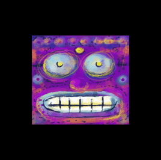

Forums galactiques > Taverne galactique : lieu de discussion informel > Description de votre personnage
| Anznül Réputation à la taverne : 50  02/01 ETU 17:53 | Score : 3 Détails Nom:
Prénom: anznul Surnom: souffrance Age: 200 Race: inconnu pour les inconnus Titre: tsar de la haine Couleur des yeux: jaune Couleur des cheveux: pas de cheveux Taille:2m Poids:100kg Habits: -manteau de soie noir Accessoires: baton de la mort Armes: épée Pouvoirs: persuation style de combat: machivelique | ||
| Soucie Réputation à la taverne : 133  02/01 ETU 18:34 | Score : 1 Détails
Nom : Aucun Prénom : Soucie Surnom : aucun Âge : Arrêté de compter... Anniversaire : 8 mars, je crois... signe astrologique : aucune idée. Race : morte. genre: féminin, ça ne se voit pas assez? Titre : Passeuse Couleur des yeux : bleus Couleur des cheveux : idem Taille : moyenne. Poids : mince (je ne serai pas plus précise, c'est malpoli de demander son poids à une fille) Q.I.: jamais fait le test. Habits : http://img237.imageshack.us/img237/4103/waitingforyoubylockjawob2.jpg Localisation : un peu partout (j'aime voyager) Ce qu'il/elle aime : La lune, les loups, la nuit. Ce qu'il/elle déteste : le soleil, les chats, le jour Plat préferé : ne mange pas Plat détesté : ne mange pas Armes : j'ai un joli katana mais je ne l'ai plus utilisé depuis des lustres. Pouvoirs : Théoriquement immortelle suite à mon décès. Style de combat: acrobatique. | ||
| black bird Réputation à la taverne : 772  02/01 ETU 18:45 | Score : 2 Détails Nom : aucun
Prénom : Blackbird Surnom : Blacko Âge : 3millénaires et 10ans Anniversaire : 20 avril signe astrologique : lion Race : a moitié humain et oiseau; il a été créer pour tuer genre: masculin... Couleur des yeux : noir Couleur des cheveux :noir Taille : 1m88 Poids : 82kg de muscles...^^ Q.I.: jamais fait le test. Localisation : là ou toute vie se trouve,il peut effectuer de long trajet Ce qu'il/elle aime : la nuit. Ce qu'il/elle déteste : les dictateurs...^^ Armes : ses poings... Pouvoirs : il maitrise le feux et l'air... Style de combat: aérien | ||
| gogo Réputation à la taverne : 0  02/01 ETU 20:30 | Score : 0 Détails erreur de topic, desolé
(le boulet!!!!!!) | ||
| Rendillion Réputation à la taverne : 675  02/01 ETU 20:33 | Score : 0 Détails Commandant, normalement c'est une présentation Rp que nous sommes habitués à voir dans ce lieu...
hrp:Vous devez parler du commandant que vous incarnez dans apocalypsis. | ||
| black bird Réputation à la taverne : 772 02/01 ETU 20:47 | Score : 0 Détails parlez vous de moi chére rendillon????
| ||
| Rendillion Réputation à la taverne : 675 02/01 ETU 20:48 | Score : 0 Détails Excusez moi?
Pourquoi parlerais je de vous? | ||
| Raspesen Réputation à la taverne : 0  03/01 ETU 14:28 | Score : 1 Détails (bip bip tictic buuuuuuu)
bonjour commandants, je suis le commandant Robot Raspesen tout nouveau commercant de cette belle galaxie j'aurais voulu savoir s'il existe un lieu de renseignement au sujet du developpement des commercants tel que moi. Tres Ho no rer de fai re vot re connai ssance. | ||
| capitaine Bleuteun Réputation à la taverne : -16  03/01 ETU 17:24  | Score : 0 Détails bienvenu a vous, paix et guérison sur votre peuple
HRP:putain gogo, c'est un personnage que tu incarne que tu decris, pas toi capitaine Bleuteun, Ultrème. | ||
| capitaine Bleuteun Réputation à la taverne : -16 05/01 ETU 01:06 | Score : 0 Détails petit up pour nos amis les nouveaux
| ||
| Rastapolypsis Réputation à la taverne : 0  05/01 ETU 10:16 | Score : 0 Détails Nom:segui
Prénom:rastapolypsis Surnom:rasta Age:24 ans Race:flemar Titre:*** Couleur des yeux:maron Couleur des cheveux:brun Taille:1m80 Poids:75 kg Habits: un short jaune et vert et un t-shirt de ronaldigno Accessoires:montre Armes:montre téléportatrice Pouvoirs:prendre le pouvoir des autre style de combat:*** |
Forums galactiques > Taverne galactique : lieu de discussion informel > Description de votre personnage